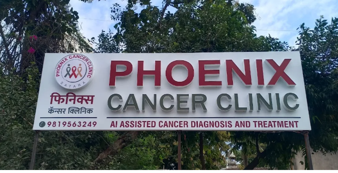

Advanced AI-Assisted Cancer Diagnosis & Treatment
Welcome to Phoenix Cancer Clinic, Satara. We are dedicated to providing comprehensive, modern, and compassionate oncology care. Under the expert guidance of Dr. Dhiraj Khadkaban, we combine surgical expertise with cutting-edge AI technology for accurate diagnosis and effective treatment planning.
Book an Appointment Learn More
AI-Assisted Diagnosis
Utilizing artificial intelligence for accurate cancer diagnosis, pathology report analysis, and personalized treatment planning.
Read More →
Advanced Surgeries
Specializing in laparoscopic, laser, and complex reconstructive surgeries for various types of cancers.
View Treatments →
Expert Oncologist
Dr. Dhiraj S. Khadkaban (MBBS, MS), a highly experienced Consultant Surgical Oncologist.
Meet the Doctor →
Cancers We Treat
Comprehensive care for various types of oncology conditions
Breast Cancer
Conservation & Reconstruction
Oral & Mouth
Laser & Commando Surgery
Lung & Chest
Thoracic Oncology
Gastrointestinal
Stomach, Liver & Pancreas
Colorectal
Laparoscopic Resections
Head & Neck
Thyroid & Throat
Why Choose Phoenix Cancer Clinic?
Where cutting-edge technology meets human compassion

- AI + Human Expertise: We don't just rely on machines. AI gives us data-driven insights, but Dr. Khadkaban's surgical experience makes the final, personalized decision.
- Minimally Invasive Techniques: Faster recovery, less pain, and minimal scarring using advanced laparoscopic and laser surgeries.
- Comprehensive Care: From the first consultation to post-surgery rehabilitation, we are with you at every step.
- Ethical & Transparent: We provide clear treatment plans, cost estimates, and honest expectations.
Your Journey With Us
A clear, step-by-step approach to your treatment
Consultation
In-depth discussion about your symptoms, medical history, and initial examination.
AI-Assisted Diagnosis
Your reports and scans are analyzed using advanced AI to ensure accurate staging.
Treatment Planning
Dr. Khadkaban creates a personalized surgical or medical roadmap for you.
Recovery & Care
Comprehensive post-operative care, follow-ups, and rehabilitation support.
What Our Patients Say
Stories of hope and healing
Dr. Khadkaban explained every detail of my breast cancer surgery. The AI reports gave me immense confidence. I am now recovering well and forever grateful.
The clinic is very clean and the staff is highly supportive. The laparoscopic surgery for my colon cancer meant I was back on my feet in just a few days. Highly recommended.
We came to Satara from a nearby village. The doctor was very kind and did not recommend unnecessary tests. The AI technology used here is truly world-class.